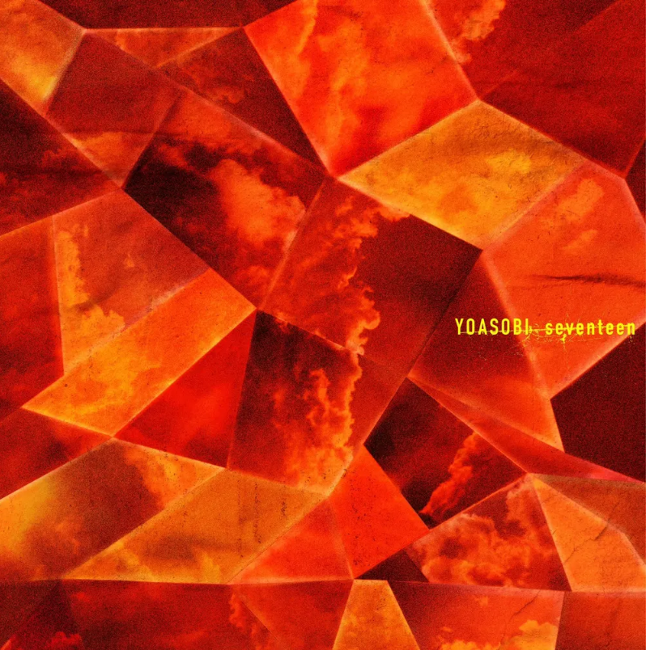
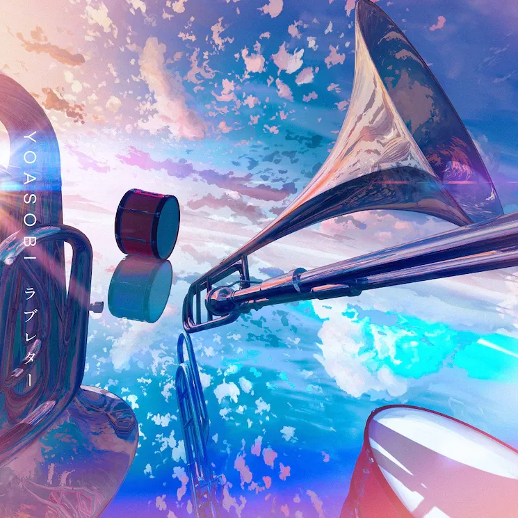

2023.3.26
나오키상 수상작가 4명과의 콜라보 프로젝트인 소설 ‘처음의(はじめての)' 의 4번째 콜라보 곡인 ‘세븐틴(セブンティーン）이 3월 27일부터 전달이 결정되었다. 원작은 ‘처음으로 용의자가 된 이야기’ 를 테마로 한, 미야베 미유키의 ‘색이 다른 트럼프’
2023.2.19
애니메이션 【최애의 아이】 오프닝 테마를 담당하는 것이 발표되었다. 곡명은 'アイドル(아이돌)'로, 【최애의 아이】의 스토리 원작자이자 카구야 님은 고백받고 싶어 ~천재들의 연애 두뇌전~의 작가이기도 한 만화가 아카사카 아카가 새로 쓴 단편 소설을 원작으로 한다.
2023.2.13
신곡 ‘어드벤처’의 릴리즈 정보와 원작이 공개되었다. 원작은 작년 일반 에피소드 모집 시 응모되어 채택된 나기의 실화 에피소드 ‘렌즈 너머의 반짝임을’. 음원 전달은 15일 자정부터 스타트.
2023.1.26
유니버설 스튜디오 재팬 공식 유튜브에 요아소비의 신곡 ‘어드벤처(アドベンチャー)'의 일부가 사용된 CM이 공개되었다. CM 이번 신곡은 작년 실시한 유니버설 스튜디오와의 콜라보 프로젝트인 학생응원 캠페인 ’유니봄‘ 의 테마송으로, 이전에 모집했던 원작을 바탕으로 제작되었다. CM 주제는 ‘잊을 수 없는 봄이 필요해’ 로, 어른이 되어도 마음 한 켠에 간직하고 있는 친구들과의 잊을 수 없는 유니버설 스튜디오에서의 소중한 봄의 추억이 깃든 마음을 표현한 곡이다.
2022.10.19
유니버셜 스튜디오 재팬과 콜라보레이션이 시작되었다. 테마는 '파크에서의 잊을 수 없는 추억'으로 학생응원 캠페인인 '유니봄(ユニ春)' 의 테마송이 되는 원작 에피소드를 모집한다.
2022.9.4
기동전사 건담 수성의 마녀 오프닝곡 '祝福(축복)'을 담당하는 것이 발표되었다. 원작은 작품의 시리즈 구성과 각본을 담당한 오코우치 이치로가 새로 쓴 단편 〈ゆりかごの星(요람의 별).
2022.3.15
PACE SHOWER MUSIC AWARD 2022에서 최고상인 ARTIST OF THE YEAR 부문과 BEST POP ARTIST 부문을 수상해 2관왕을 기록했다.
2022.3.15

올 나이트 닛폰 55주년 기념 공연의 테마곡인 'ばかまじめ'를 디지털 싱글로 3월 20일 발매하는 것이 발표되었다. 원작은 요아소비 작품의 원작을 썼던 바 있는 코미카도 유이치로의 공연 각본으로 보이며, DJ마츠나가와 Ayase가 공동 작곡, R-지정과 Ayase가 공동으로 작사를 맡았다. 이쿠타 리라는 보컬로만 참여.
2021.12.31
2021년 홍백가합전에 참여하였다. ツバメ와 群青을 각각 1부, 2부에 불렀다. ツバメ는 라이브 무대에서 노래를 함께 불렀던 어린이 유닛 미도리즈와 함께 노래를 불렀고, 群青은 무려 180여명의 댄서들이 함께 등장했다.
2021.12.21
올 나이트 닛폰 55주년 기념 공연 '그 밤을 기억하고 있어(あの夜を覚えてる)'의 주제가를 올나이트 닛폰 0의 화요일 퍼스널리티를 맡고 있는 Creepy Nuts와의 콜라보레이션으로 담당하는 것이 결정되었다. 정확히는 Creepy Nuts × Ayase × 이쿠타 리라 명의의 콜라보레이션으로, 같은 듀오임에도 Creepy Nuts와 달리 두 사람의 이름이 별도로 표기되었다.
2021.12.1
나오키상 수상 작가 4명과의 콜라보레이션이 결정되었다. 기획의 테마는 '처음으로 ○○했을 때에 읽는 이야기'로, 각 작가들이 콜라보레이션을 위해 새로 쓴 신작 소설을 원작으로 삼는다. '처음으로 사람을 좋아하게 되었을 때'를 테마로 한 시마모토 리오(島本理生)의 〈나만의 소유자(私だけの所有者)〉, '처음으로 가출했을 때'를 테마로 한 츠지무라 미즈키의 〈유령(ユーレイ)〉, '처음으로 용의자가 되었을 때'를 테마로 한 미야베 미유키의 〈색이 다른 트럼프(色違いのトランプ)〉, '처음으로 고백했을 때'를 테마로 한 모리 에토(森絵都)의 〈빛의 씨앗(ヒカリノタネ)〉까지 네 작품을 원작으로 2022년 2월 이후 순차적으로 발매 예정. 네 편의 원작은 《처음의(はじめての)》라는 제목의 소설집으로 묶여 2022년 2월 16일 출간된다.
2021.10.25
NHK 어린이 방송 'ひろがれ！いろとりどり'의 테마 송으로 제작된 곡 츠바메(제비)(ツバメ)가 디지털 싱글로 발매되었다. 원작은 오토즈키 나나의 〈작은 제비의 큰 꿈(小さなツバメの大きな夢)〉이고, 10월부터 주제가로 사용되고 있다. YOASOBI with 미도리즈(ミドリーズ) 명의로 발표되었는데, 미도리즈는 이 곡을 위해 결성된 5인의 어린이 유닛이다.
2021.8.8
유튜브 생방송 '요아소비 반성회' 종료 이후 신곡 '다이쇼 로망(大正浪漫)'을 9월 15일 디지털 싱글로 발매하는 것을 발표했다. 원작은 요아소비 콘테스트 vol.2에서 당선된 NATSUMI의 〈다이쇼 로맨스(大正ロマンス)〉. 싱글 발매와 함께 원작 소설을 가필 수정 및 개고한 서적 《다이쇼 로망》이 함께 발간되며, 한정판에는 ikura와 피아니스트 하라미쨩의 특별 세션 영상을 수록한 BD가 동봉된다.
2021.8.2
신곡 '러브레터'가 8월 9일 디지털 싱글로 발매되는 것이 발표되었다. 라디오 방송 'SUNDAY'S POST'와의 공동기획 '레터 송 프로젝트'를 통해 만들어진 곡으로, 청취자의 편지를 바탕으로 만들어졌다. 원작으로 당선된 편지는 당시 초등학교 6학년이었던 하츠네(はつね)의 음악에 대한 감사를 담은 편지. 레코딩에는 유니클로 콜라보 라이브에서 함께했던 오사카 토인 고교 취주악부 학생들이 참여했다.
2021.6.25
삼원색의 음원을 7월 2일 발매하는 것이 발표되었다. 음원 발매에 맞추어 같은 날 콜라보레이션 티셔츠 판매를 개시하는 유니클로에서 요아소비 티셔츠를 구매하는 고객에게 원작 〈RGB〉의 프롤로그 만화 〈Prologue to RGB〉 책자를 배포한다. 또한 같은 날에는 데뷔곡인 밤을 달리다의 영어 버전 음원 'Into The Night' 역시 발매된다.
2021.6.14

유니클로와의 콜라보레이션으로 7월 2일부터 UT 티셔츠가 발매된다는 것이 공개되었다. 밤을 달리다, 봄망초, 아마도, 군청, 하루카, 앙코르, 삼원색 7곡을 이미지로 삼은 디자인으로 여성용 사이즈의 성인용 7종, 아동용 5종이 발매된다. 해외 스토어에서도 발매될 예정이지만 국내 유니클로 스토어에서는 구매할 수 없다.
2021.6.8

2024년 완공될 신 Ginza Sony Park의 공사를 앞두고 개최되는 기획전 'Sony Park전'에 millennium parade나 Creepy Nuts 등의 타 뮤지션과 함께 참가하는 것이 발표되었다. 발표 예정의 신곡을 테마로 체험할 수 있는 전시로, 요아소비는 '반도체는, SF다.'를 테마로 9월 2일부터 13일까지 전시될 예정.
2021.6.2

다나카 케이 주연의 연극 '만약에 생명을 그릴 수 있다면(もしも命が描けたら)' 테마곡을 담당하기로 결정되었음이 발표되었다. 희곡과 연출을 맡은 것은 하루카의 원작 '달왕자'를 집필했던 스즈키 오사무.
2021.5.10

메자마시 테레비의 테마곡이자 신곡, 9번째 디지털 싱글 '조금만 더(もう少しだけ)' 풀 버전 음원이 발매되었다. 신곡에 대한 여러가지 내용들을 5월 5일 0시, YOASOBIANNX에서 OA를 진행했다.
2021.4.20
NHK의 어린이 방송 'ひろがれ！いろとりどり'의 테마곡을 10월부터 담당하기로 결정되었음이 발표되었다. 이에 맞추어 'YOASOBI와 만드는 미래의 노래(YOASOBIとつくる 未来のうた)'라는 이름으로 6세부터 19세까지의 어린이와 청소년들에게 원작 소설을 모집하는 공모가 개시되었다.
2021.3.29
2021년 3월 29일부터 메자마시 테레비의 테마곡으로 신곡 '조금만 더(もう少しだけ)'가 사용되기 시작했다. 원작은 상술한 콘테스트에서 당선된 〈돌아간다.〉.
2021.2.26

THE FIRST TAKE에 출연해 군청을 공연했다. 이쿠라 혼자 출연했던 THE HOME TAKE 촬영 당시와 달리 아야세와 이쿠라가 함께 무대에 섰으며, 라이브에서 함께하는 밴드 세션 멤버들은 물론 코러스로 참여한 플러소니카의 멤버들까지 전원이 등장했다. THE FIRST TAKE가 일반적으로 한 번의 섭외로 두 개의 영상을 녹화하는 만큼 3월 10일에 두 번째 영상이 업로드, 이쿠라 홀로 등장해 상냥한 혜성을 불렀다.
2021.2.24

NTT 도코모의 새로운 요금제 'ahamo'의 CM송으로 신곡 '삼원색(三原色)'이 타이업되었음이 발표되었다. 원작은 곡을 위해 각본가 코미카도 유이치로(小御門優一郎)가 쓴 소설 〈RGB〉. 2020년 3월 30일 숏 버전 스페셜 MV가 공개되었으며, 음원은 초여름에 발매될 예정.
2021.1.18
CDTV 라이브! 라이브!에 출연했다.
2021.1.18
후지 테레비의 아침 방송 메자마시 테레비의 테마곡을 담당하기로 결정되었음이 발표되었다. Official髭男dism의 HELLO를 이어 2021년 4월부터 사용될 예정이며, 이에 맞추어 monogatary.com에서 요아소비 콘테스트 vol.3 with 메자마시 TV가 개최되었다.
2021.1.14

요아소비가 오프닝을 맡은 BEASTARS 2기 2화의 방영과 함께 더블 타이업으로 엔딩곡 '상냥한 혜성(優しい彗星)' 역시 담당했음이 공개되었다.
2021.1.6
YOASOBI 첫 EP 《THE BOOK》 발매와 동시에 신곡인 '앙코르'를 포함한 전곡의 음원이 공개되었으며, 같은 날 방영을 시작한 애니메이션 BEASTARS 2기 오프닝곡인 '괴물'의 풀버전 음원이 공개되었다. 같은 날에는 요아소비 오피셜 팬클럽 'CLUB 요아소비(夜遊)'의 사전 오픈과 함께 2021년 2월 14일 첫 온라인 라이브 'KEEP OUT THEATER'를 개최하는 것 또한 발표되었다.
2020.12.23
홍백가합전에 출전하는 것이 발표되었다. 밤을 달리다를 공연할 예정으로, 함께 발표된 코멘트에도 적혀 있듯 THE FIRST TAKE 촬영 정도를 제외하면 라이브를 개최하거나 음악 프로그램에 참여한 적도 없기 때문에 홍백가합전에서 첫 라이브 퍼포먼스를 펼치는 셈.
2020.11.5

2021년 1분기 방영되는 애니메이션 BEASTARS 2기 오프닝곡으로 신곡 '괴물'이 타이업되었다.
2020.10.30
MTV 비디오 뮤직 어워드 재팬 2020에서 밤을 달리다가 특별상인 SONG OF THE YEAR를 수상하였다.
2020.10.15
요아소비 콘테스트 vol.1 대상 작품 중 하나인 〈세상의 끝과, 이별의 노래(世界の終わりと、さよならのうた)〉 (미나카미 카나미 저)를 원작으로 한 신곡 '앙코르'가 Google Pixel 5, Pixel 4a(5G) CM송으로 타이업되었다.
2020.10.1
2021년 1월 6일에 첫 피지컬 음반으로서 EP 《THE BOOK》을 발매한다고 발표하였다.
2020.9.18
요아소비 원작 소설 중 밤을 달리다의 원작 〈타나토스의 유혹〉, 그 꿈을 덧그리며의 원작 〈꿈의 물방울과 별의 꽃〉, 아마도의 원작 〈아마도〉, 발매 당시 미발표곡이었던 앙코르의 원작 〈세상의 끝과, 이별의 노래〉 네 편을 묶은 소설집 《밤을 달리다 YOASOBI 소설집》이 출간되었다.
2019.12.15
첫 번째 디지털 싱글 <夜に駆ける>로 데뷔했다.